5.Механическая обработка
5.1 Точение
Точение — это лезвийная обработка резанием поверхностей вращения и торцовых.
При точении получают цилиндрические и скругленные формы с помощью однолезвийного инструмента. Инструмент в этом случае неподвижен, а заготовка вращается.
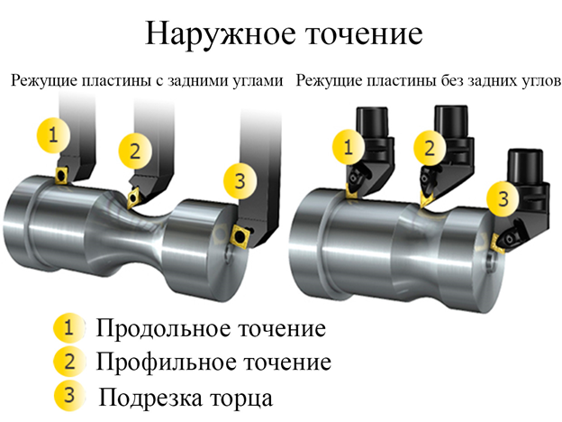
Растачивание — процесс механической обработки внутренних поверхностей отверстия расточными резцами в заданный размер.
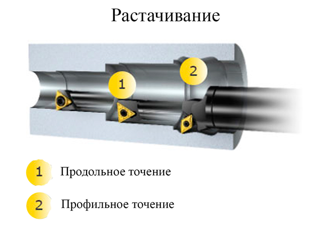
5.2 Отрезка и обработка канавок
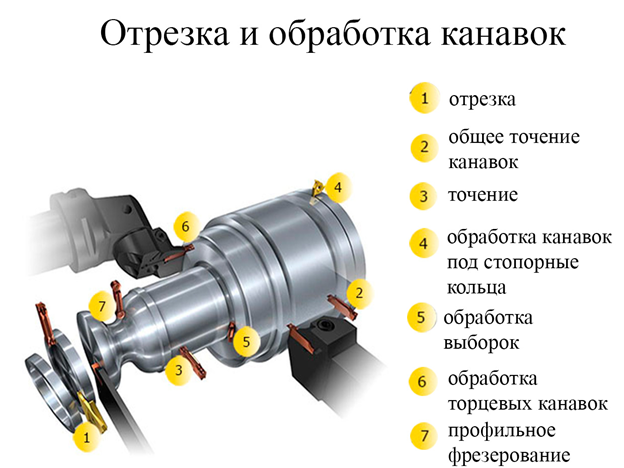
Канавка-маленький желоб, небольшое продолговатое полукруглое углубление в чем-либо.
5.3 Резьбонарезание
Резьбонарезание, или вихревое нарезание резьбы вращающимися резцами – один из сложных, трудоемких и наиболее распространенных процессов обработки резанием деталей машин.
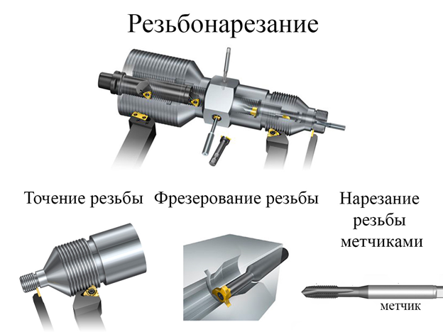
5.4 Фрезерование
Фрезерование — это процесс механической обработки, при котором режущий инструмент совершает вращательное движение, а обрабатываемая заготовка — поступательное.
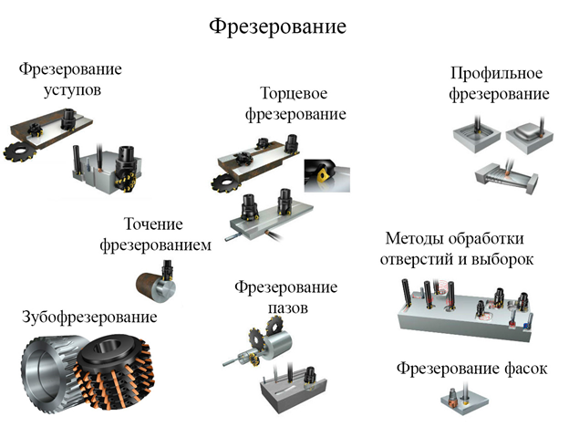
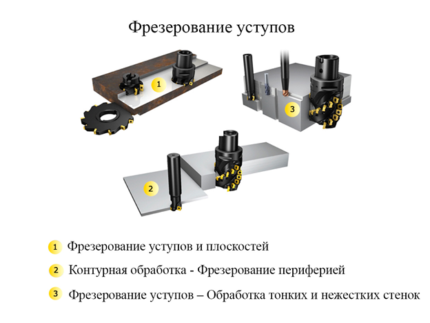
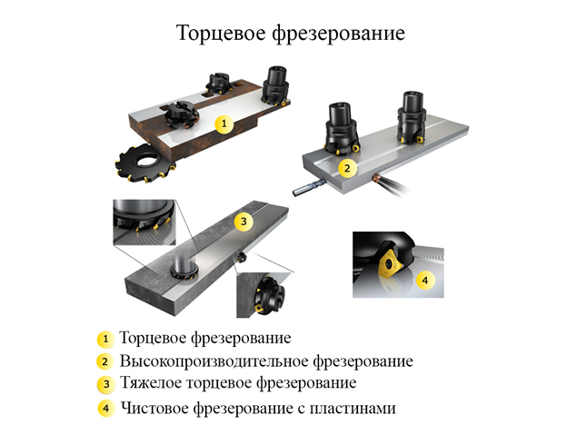
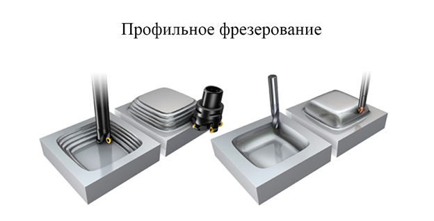
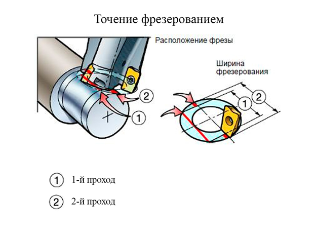
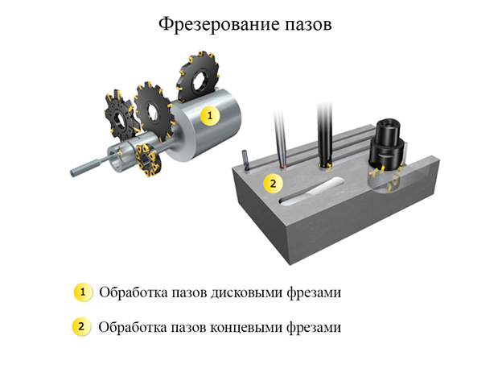
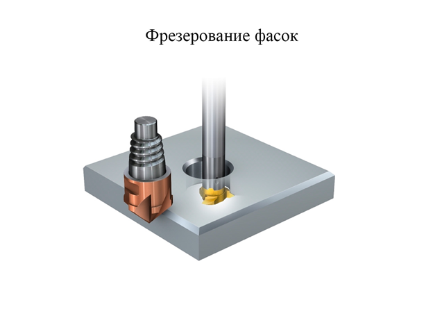
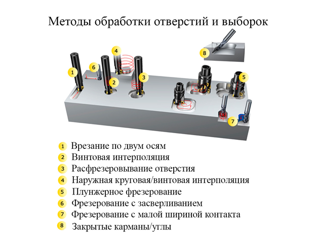
5.5 Сверление
Сверление — вид механической обработки материалов резанием, при котором с помощью специального вращающегося режущего инструмента (сверла) получают отверстия различного диаметра и глубины, или многогранные отверстия различного сечения и глубины.
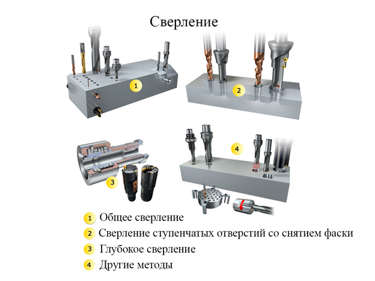
5.6 Растачивание
Растачивание — процесс механической обработки внутренних поверхностей отверстия расточными резцами в заданный размер.
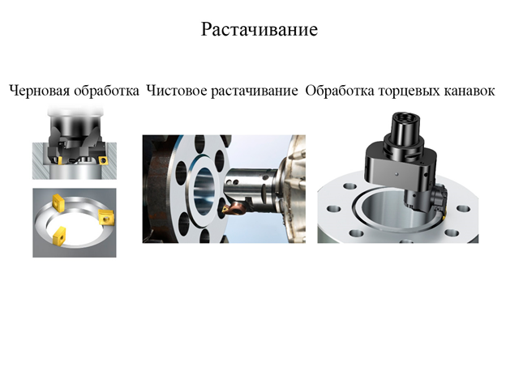
5.7 Сборка
ГОСТ 2.101-16 - Виды изделияГОСТ 23887-79 - Сборка. Темины и определения